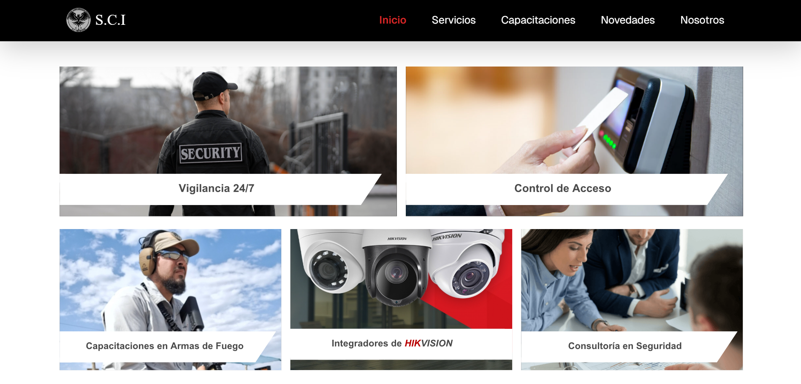
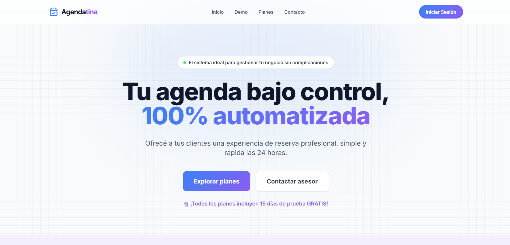
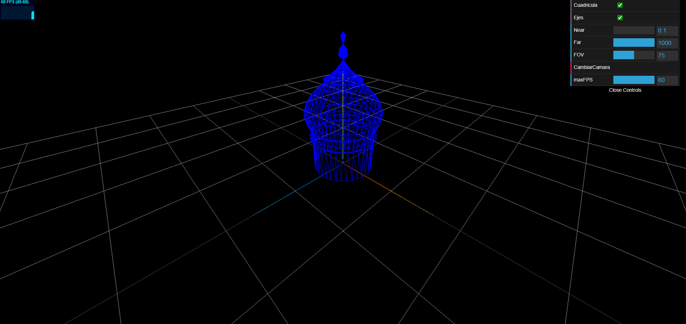

Disponible para proyectos
Hola, soy Valentina
Estudiante de Ingeniería en Computación
Creando experiencias digitales con un toque único y profesional. Especializada en interfaces limpias y código robusto.
Proyectos Destacados

Ver Pagina
React
Corporate
Página web SCI
Desarrollo de landing page y sistema web corporativo para SCI.

Ver Pagina
PHP / MySQL
SaaS
Agendatina
Plataforma completa de gestión de turnos, agenda virtual y notificaciones.

Ver Pagina
Three.js
WebGL
Taj Mahal 3D
Experiencia interactiva renderizada en el navegador explorando el Taj Mahal.
Habilidades Técnicas
Herramientas y tecnologías que utilizo para dar vida a grandes ideas.
html
HTML5 / CSS3
javascript
JavaScript
database
SQL / NoSQL
palette
Diseño UI/UX
deployed_code
Next.js
brush
Tailwind
Arquitectura Frontend
95%
Sistemas Backend
80%
Patrones UI Modernos
90%
Optimización Móvil
85%
favorite
¿Queres trabajar conmigo?
Estoy lista para ayudarte a construir algo increíble. Descarga mi currículum detallado o envíame un mensaje.